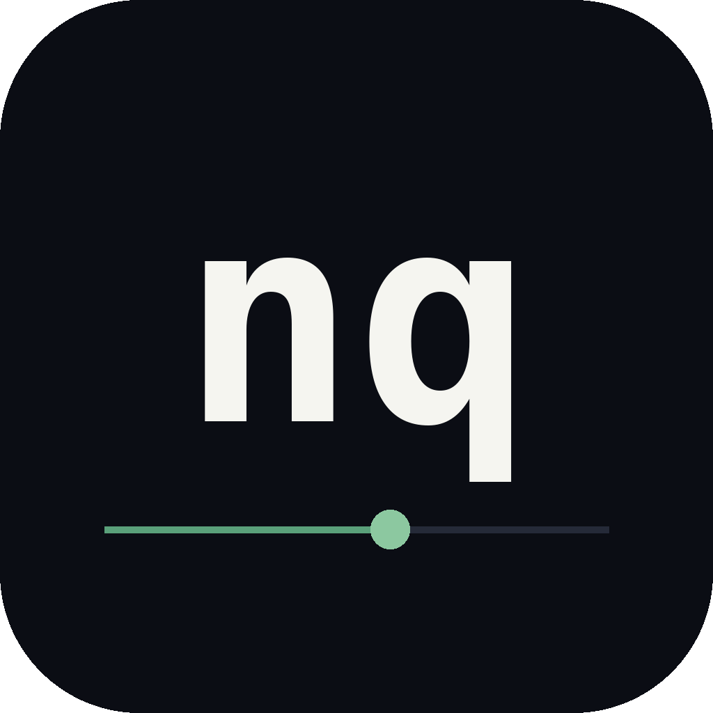

nightqueueQueue the work during the day. Start the batch when you step away. Come back to pull requests — and to an agent that remembers what it learned last night.
npx @nightqueue/nq init
Needs Claude Code with your own subscription, Node ≥ 22 and gh. Nothing leaves your machine.
Every phase is a dedicated subagent with its own instructions, running in a git worktree it cannot leave. Each phase writes an artifact the next one is gated on; a job that needs a decision stops with a written notice, and one command sends it back.
nq queue add records a deliverable; nq queue run works through the whole backlog unattended and comes back with one pull request per job.
Lessons, project decisions and structural indexes survive between runs — hybrid recall (BM25 + optional local embeddings), scoped per project and per org. Every run makes the next one cheaper.
A job that needs a call stops with a written notice. nq queue retry <id> --note "…" answers it and the job goes back to the queue.
Adversarial QA, then verification against the checks your project already defines, then a runtime check. The pull request carries the evidence, not a promise.
One home, many repositories, grouped by org — each with its own decisions log and roadmap, exposed to Claude Code and Claude Desktop through an MCP server.
Every phase hands off through a file. A run can be read, resumed and audited after the fact; nq queue session <id> reopens the conversation that did the work.
| A chat session | nightqueue | |
|---|---|---|
| Who drives | you, prompt by prompt | the pipeline, phase by phase |
| Memory | gone when the window closes | lessons and decisions persist per org |
| Quality gate | whatever you remember to ask | adversarial QA + your project's own checks, every run |
| Output | a diff in a terminal | a reviewable pull request with a report |
| When it runs | while you watch | while you sleep |
# once npx @nightqueue/nq init # runtime, commands, MCP server, Claude Code plugin cd your-repo && nightqueue setup # register the project # the day nq queue add "fix the flaky worker" nq queue add "add the retry to the uploader" nq queue run # start the batch, detached, when you step away # the morning nq queue status # what each job became nq queue retry 7 --note "rename the column" # answer a gate nq queue close 8 # merge its pull request through the closing pipeline
Inside Claude Code, /nightqueue:queue turns the plan under discussion into a job and /nightqueue:resolve runs the pipeline on the spot. nightqueue open starts the operator: investigate, triage and prepare a job without knowing any of the above.